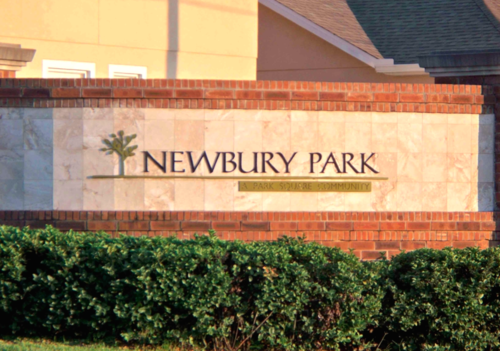

Article
Talk
Hotwire (band)
From Wikipedia, the free encyclopedia
Hotwire
was an American
Alternative metal
band from
Newbury Park, California.
Contents
-
History
-
Members
-
Discography
-
Media
- References
History
Hotwire's members met at
Newbury Park High School;
after recording a few
demos,
they scored slots opening
dates of bands,
Will Haven
,
Strife
,
Hoobastank
, and
Audiovent
but also garnered large support at the
Troubadour in Los Angeles with an extended residency spanning 6 months.[1] They signed with RCA Records in
December 2000, they continued to tour taking slots supporting such diverse acts as Mogwai, Ben Harper, Iggy Pop and The Stooges, Björk, Darkest Hour, Bloodlet, Wu-Tang Clan, Poison The Well, Killswitch Engage, The Dillinger Escape Plan, and Atreyu. They released a four-track EP in 2002 before issuing their full-length album, The Routine in the summer of 2003. They followed the release of the album with a slot on the Ozzfest tour that year as well as making time for the Fuji Rock Festival in Japan.[1] A single from the album, "Not Today", was a hit on American rock radio, peaking at No. 40 on the Billboard Mainstream Rock chart.[2] The band broke up soon after the Ozzfest tour despite accumulating much new material but citing both mismanagement of funds by their management and personal reasons.
Members
- Gabriel Garcia - guitar, vocals - Formerly in Countervail since has released albums under the monikers Transfatal Express, St. Malaclypse and as himself. He has also produced and engineered the Trim album for Deadbirds as well as several songs for The Soft Hills' Painted World EP. He later scored music for several experimental films as well as collaborated on soundscapes/sound design for the Los Angeles Natural History Museum's Collapse Exhibit and Daft Punk's Electroma.
- Rus Martin - lead vocals, guitar - Formerly with Eyelid, Chlora, Leisure, now in Skyscraper Frontier, Beware the Idols and Fake Figures (the last one, a band composed with members of Atreyu and Scars of Tomorrow)
- Dan Hartman - bass guitar - Formerly in The A.M. Project, The Foundation AD
- Chris Strauser - bass guitar - Formerly in Countervail
- Brian Borg - drums - Formerly in Mellowdrone, Insurgence, Deadbirds, now in WarWidow
- Jon Peloso - guitar - Formerly in Blue Equals Expired, Go Empire!, Deadbirds, now in WarWidow
Gabriel, Rus and Brian are now under Coming Home Records and all participate in their respective projects.
Gabriel also owns Everyday Heaven recording studio.
